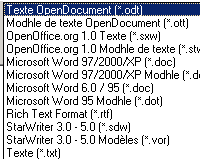

| Introduction
|
OpenOffice.org 2.0 -
traitement de texte, tableur, module de présentation et plus encore !
|
OpenOffice.org 2.0 est une suite bureautique riche en fonctionnalités
et multiplateforme. L'interface utilisateur et les fonctionnalités sont
assez similaires aux autres produits du marché comme Microsoft Office
ou Lotus SmartSuite, mais au contraire de ces produits commerciaux,
OpenOffice.org est complètement gratuit et libre.
Une complète description du produit est disponible ici :
|
| Quelques fonctions clés
(cliquez sur l'image pour la voir en grand format !) |
| Format de fichiers Open
Standards XML (OASIS OpenDocument) |
|  |
A partir de la
version 2.0, OpenOffice.org utilise le format de fichiers standard XML OASIS
OpenDocument comme format par défaut pour les documents. Le format
OASIS OpenDocument est un format indépendant de tout constructeur ou
vendeur et garantit donc sa liberté et son indépendance.
En plus d'OpenOffice.org, la suite KOffice
aussi bien que des dérivés d'OpenOffice.org comme StarOffice software
supportent ce format de document. Le format de fichiers OASIS
OpenDocument est aussi l'un des formats de fichiers recommandé par la Commision
Européeenne. |
|
Nouvelle présentation
multi-volets
|
 |
La nouvelle
présentation multi-volets augmente la productivité et l'ergonomie
d'OpenOffice.org. Cette présentation multi-volets met à disposition
tous les outils et fenêtres nécessaires à travers une interface
cohérente, simple et intégrée. Les utilisateurs de Microsoft PowerPoint
vont trouver OpenOffice.org 2.0 très simple d'utilisation. |
|
| Nouvelles formes
personnalisées (compatible avec les AutoFormes Microsoft) |
|
OpenOffice.org
supporte maintenant les FormesPersonnalisées, qui sont très proches des
AutoFormes Microsoft. En conséquence, les AutoFormes sont maintenant
importées et affichées correctement. Les FormesPersonnalisées sont des
formes dont on peut non seulement changer la taille, mais également
l'apparence. |
|
Plus d'effets de
transitions et d'animations pour les diapos
|
|
OpenOffice.org
intègre maintenant beaucoup plus d'effets d'animations et de
transitions de diapos. Les utilisateurs disposent de beaucoup plus
d'options pour donner à leur présentation une apparence
professionnelle. De plus, le support étendu de ces effets améliore la
compatibilité avec Microsoft PowerPoint. |
|
Amélioration de l'export
PDF
|
|
OpenOffice.org 1.1 a
introduit la fonctionnalité d'export PDF. La version 2.0 étend cet
export basique. Avec la nouvelle version il est maintenant possible de
définir le taux de compression des images intégrées. Le support PDF
traite correctement les images sous forme d'onglets et les hyperliens,
il inclut la possibilité de création de formulaires. |
|
Nouveau frontal pour les
bases de données
|
|
OpenOffice.org a
toujours eu un frontal pour manipuler les bases de données, mais dans
les versions précédentes, il était caché. OpenOffice.org 2.0 commence à
traiter les bases de données comme toute autre application, i.e. les
nouvelles bases de données peuvent maintenant être créées à partir du
menu Fichier - Nouveau. Pour les utilisateurs novices, OpenOffice.org
propose un assistant de création de Tables qui permet de créer des
tables de bases de données sans connaissance particulière des bases de
données ou du SQL. Le nouveau moteur de base de données intégré HSQLDB, basé sur la
technologie Java, permet de créer des documents au format base de
données. Ce simple fichier de base de données ne nécessite pas un
serveur de base de données comme MySQL ou Adabas D. Toutes les
informations (définitions des tables, données, requêtes, formulaires,
rapports) sont stockées dans un fichier XML. |
|
Assistant de mailing
|
|
Le nouvel assistant
de mailing facilite l'envoie de documents à des centaines de
destinataires. Cet assistant guide l'utilisateur pas à pas à travers
les différentes étapes. Des sources de données variées peuvent être
utilisées pour les champs d'adresses.
|
|
Amélioration des
statistiques de comptage des mots
|
|
Auparavant, il
n'était possible d'obtenir des statistiques sur le document qu'à
travers le menu Fichier - Propriétés. Il était également impossible de
compter le nombre de mots dans une sélection. OpenOffice.org 2.0
supprime cette restriction. Vous trouverez une nouvelle boîte de
dialogue de comptage sous le menu Outils.
|
|
Support des tableaux
imbriqués
|
 |
Avec OpenOffice.org
2.0 il est maintenant possible de créer des tableaux dans des tableaux
(tableaux imbriqués). Cela améliore l'utilisation générale de cette
fonctionnalité mais également la compatibilité avec Microsoft Word. |
|
Support des signatures
numériques
|
|
Une autre nouvelle
fonctionnalité est le support des signatures numériques. OpenOffice.org
utilise des certificats enregistrés dans les répertoires habituels. |
|
Support des formulaires
XForms
|
|
OpenOffice.org 2.0
permet de créer des formulaires basés sur le standard ouvert W3C XForms. Avec XForms, le
développement de ces formulaires devient très simple à réaliser, sans
programmation. |
|
Filtres Word Perfect
|
|
OpenOffice.org 2.0
inclut un filtre
WordPerfect développé par la communauté open source. Les
développeurs sont invités à contribuer à ce
projet. |
|
65 536 lignes dans Calc
|
|
Les feuilles de
calcul OpenOffice.org 1.1 comportaient seulement 32 768 lignes, ce qui
entrainait des problèmes d'interopérabilité avec Microsoft Excel. La
nouvelle version d'OpenOffice.org est maintenant au même niveau que
Microsoft Excel. |
|
Amélioration du Pilote de
Données
|
|
Avec le Pilote de
Données de OpenOffice.org 2.0 (similaire aux Tableaux Croisés Microsoft
Excel) il est maintenant possible de créer des nouveaux groupes, de
filtrer les données basées sur des valeurs, d'afficher les différences
en pourcentage à la place des valeurs absolues, etc.
Ces nouvelles fonctionnalités du Pilote de Données font
d'OpenOffice.org Calc un puissant outil d'analyse de données. |
|
Installeur natif
|
|
OpenOffice.org 2.0
supporte un mécanisme d'installation natif. Par exemple, les fichiers
.MSI et .CAB sont proposés sous Microsoft Windows; les fichiers RPM
sont disponibles pour Linux.
Pour les utilisateurs qui ont des besoins plus sophistiqués, Sun
fournit un outil de management de configuration avec StarOffice software.
StarOffice 8 introduira également un outil de migration des macros.
|
|
Intégration native dans
l'environnement de bureau
|
|
Les applications
OpenOffice.org 2.0 s'intègrent harmonieusement dans l'environnement de
bureau. Ainsi, OpenOffice.org prend l'apparence et se comporte comme
n'importe quelle autre application d'une plateforme donnée. Sur Windows
XP elle ressemble à une application Windows, et sur Linux elle utilise
les mêmes widgets de l'interface utilisateur que GIMP ou Evolution. |
|
Barres d'outils flottantes
|
|
Les barres d'outils
sont bien plus souples dans OpenOffice.org 2.0. Elles sont faciles à
déplacer, attacher et détacher, il est très simple de les arranger
autour de l'espace de travail et de les personnaliser. |
|
| Support, Services et
Solutions |
 |
Un nombre sans cesse
croissant de sociétés offrent services et
développement pour OpenOffice.org.
De plus en plus d'entreprises proposent également des versions dérivées
d'OpenOffice.org qui incluent parfois des outils complémentaires (ex. StarOffice from Sun Microsystems).
Enfin, des distributeurs
vous proposent des ordinateurs avec OpenOffice.org pré-installé.
|
|
| Informations
complémentaires |
Copies d'écran
complémentaires
|
|
|
Guide complet des
nouvelles fonctionnalités d'OpenOffice.org 2.0
|
|
|
Les outils complémentaires
pour OpenOffice.org développés par la communauté
|
|
|
Page de téléchargement.
|
|
|
|


{kind=link}
{kind=link}
{kind=link}
{kind=link}
{kind=link}
{kind=link}
{kind=link}
{kind=link}
{kind=link}
{kind=link}
{kind=link}
{kind=link}
{kind=link}
{kind=link}